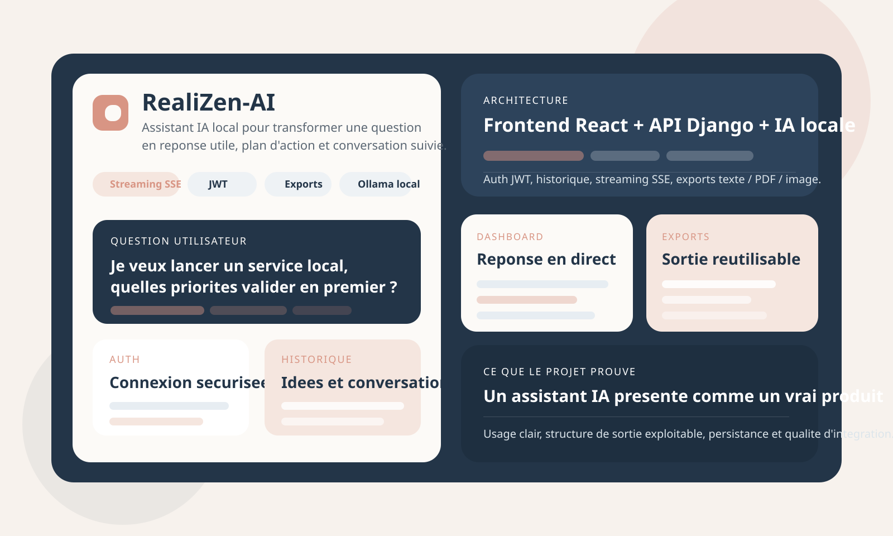
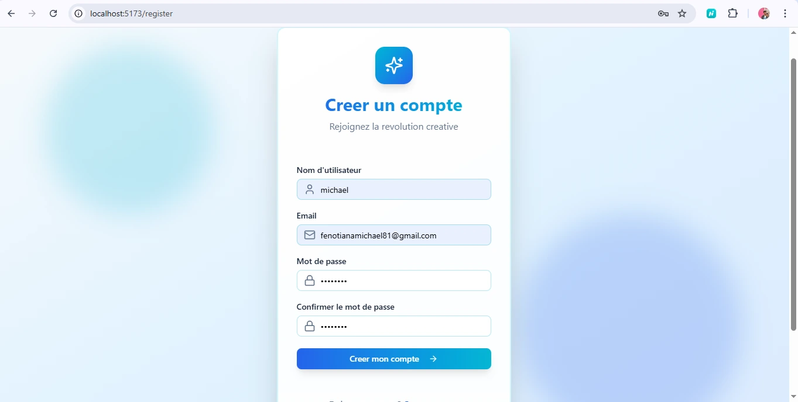
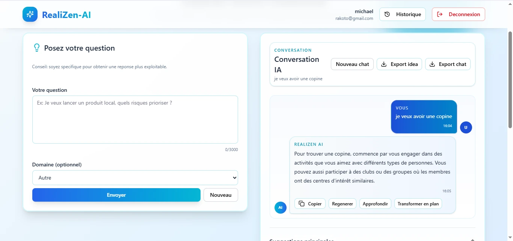
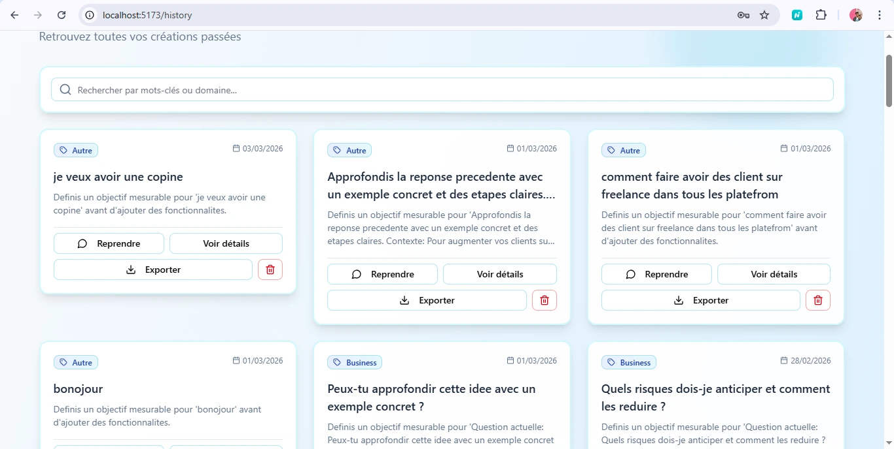

Étude de cas
RealiZen-AI, assistant web de génération d'idées
Un MVP full-stack qui transforme une question en réponse structurée, conserve les conversations et exporte le contenu généré avec une IA locale.
Informations rapides
- Type de projet
- MVP full-stack réalisé dans le cadre d'un hackathon
- Mon rôle
- Information à compléter
- Durée
- Information à compléter
- Statut
- Information à compléter
- Technologies
- React, Vite, Tailwind, shadcn/ui, Django REST, MySQL, JWT, SSE et Ollama
Contexte
RealiZen-AI a été développé comme un MVP full-stack dans le cadre d'un hackathon. Le projet vise à rendre l'usage d'un assistant IA concret pour un utilisateur final, grâce à un parcours web, une persistance conversationnelle, une sortie structurée et des exports.
Problème rencontré
Faire passer une IA locale du stade de prototype technique à celui d'un outil web crédible, lisible et réutilisable.
Mon rôle
Information à compléter
Solution
Un frontend React/Vite pour l'expérience utilisateur, un backend Django REST pour la logique métier et Ollama pour la génération par IA en local.
Technologies
React, Vite, Tailwind, shadcn/ui, Django, Django REST Framework, MySQL, JWT, SSE, Ollama et client LLM local.
Architecture et fonctionnement
Le projet relie l'interface, la logique métier et la couche d'IA. Chaque brique répond à une fonction précise dans le parcours.
Frontend React orienté vers l'usage
Pages de connexion et d'inscription, tableau de bord conversationnel et historique, avec reprise de conversation, boutons d'action et retour utilisateur direct.
API Django comme noyau
Authentification JWT, endpoints d'idées, conversations, exports et contrôles d'état pour conserver une application correctement découplée.
Couche IA locale
Le backend dialogue avec Ollama en local, construit les prompts et gère les cas où la sortie JSON du modèle est partielle ou imparfaite.
Persistance utile
Les entités Idea, Conversation et ConversationMessage permettent de relancer un échange, de conserver un historique et de rattacher une idée à chaque réponse.
Parcours utilisateur
Connexion
Inscription, connexion, rafraîchissement du jeton et récupération du profil utilisateur.
Question
L'utilisateur saisit sa demande, choisit un domaine ou laisse l'application le détecter.
Streaming
La réponse arrive progressivement dans le tableau de bord, avec des relances rapides possibles.
Historique
Les idées sont sauvegardées, filtrables, consultables et réutilisables dans la conversation correspondante.
Export
Le contenu peut être exporté au format texte, PDF ou image pour être utilisé en dehors du navigateur.
Routes et services du backend
Le backend gère l'état du produit, la continuité des conversations, la sécurité des utilisateurs et la génération d'exports.
POST /api/auth/login/Connexion de l'utilisateur et délivrance des jetons JWT.
POST /api/ideas/conversations/stream/Envoi de la question, streaming SSE, puis sauvegarde de l'idée et du message de l'assistant.
GET /api/ideas/conversations/latest/Reprise rapide de la dernière conversation.
GET /api/ideas/Historique des idées avec accès aux contenus générés et à leur contexte.
GET /api/exports/ideas/{id}/text/Export au format texte intégré au frontend.
GET /health/ai/Vérification de la disponibilité du moteur d'IA local et des modèles Ollama.
Fonctionnalités principales
Authentification
Connexion et inscription
Accès sécurisé à l'espace personnel.
- Connexion et inscription reliées à l'API
- Session gérée par JWT et jeton de rafraîchissement
- Redirection selon l'état de la session
Tableau de bord
Conversation guidée
Question, réponse en direct et relances.
- Réponse diffusée en streaming
- Suggestions de relances préremplies
- Copie et export du contenu généré
Historique
Idées sauvegardées et reprises
Conservation, recherche et reprise du contexte.
- Liste des idées générées
- Recherche par mots-clés ou domaine
- Reprise de la conversation associée
Exports
Contenu exploitable hors de l'application
Plusieurs formats de sortie pour réutiliser une idée.
- Export texte d'une idée et d'une conversation
- Génération de PDF et d'images côté backend
- URL de partage prévues pour plusieurs plateformes
Difficultés et décisions techniques
- Gérer les sorties JSON partielles ou imparfaites du modèle grâce à une normalisation côté backend.
- Diffuser la réponse en streaming SSE afin de réduire la sensation d'attente.
- Utiliser Ollama pour conserver une génération par IA en local.
- Persister les idées, les conversations et leurs messages afin de permettre leur reprise.
Captures d'écran
Les vues montrent la synthèse du produit, l'authentification, la conversation avec l'IA et l'historique.




Résultats et apprentissages
Résultat : l'utilisateur peut se connecter, poser une question, suivre la réponse en direct, reprendre la conversation et exporter le contenu généré.
Vision produit
Un parcours complet avec continuité et contenu exploitable.
Capacité full-stack
Interface, backend, modèle de données, streaming, authentification et couche d'IA.
Rigueur technique
Normalisation, contrôles d'état et persistance conversationnelle.
Apprentissages personnels : Information à compléter
Pistes d'évolution documentées
- Ajouter une page de présentation publique.
- Intégrer côté frontend les exports PDF et image ainsi que les URL de partage.
- Renforcer les tests des modules d'authentification et d'export.
- Préparer un déploiement cloud avec supervision du moteur d'IA et plusieurs environnements.